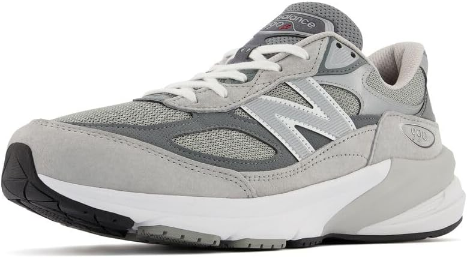

We live in a culture that glorifies the extreme. HIIT workouts. 5am CrossFit. Ultramarathons. If you're not gasping for air or hobbling the next day, did you even exercise? This obsession with intensity has quietly convinced millions of people that the most accessible, ancient, and research-backed form of movement isn't "real" exercise. That walking doesn't count.
It counts. In fact, for most people, it might be the single best thing they can do for their health.
"Walking is a superpower disguised as something ordinary. Most people walk right past it."
What the Research Actually Says
A landmark study published in JAMA Internal Medicine followed over 16,000 older women and found that those who walked just 4,400 steps per day had significantly lower mortality rates than those who walked fewer. The benefits plateaued around 7,500 steps — not 10,000, which was a number invented by a 1960s Japanese marketing campaign for a pedometer, not science.
Other studies link regular walking to reduced risk of heart disease, type 2 diabetes, depression, cognitive decline, and certain cancers. A 30-minute daily walk lowers blood pressure comparably to some medications. And unlike most medications, it also improves your mood, clears your head, and is completely free.
The Mental Health Angle
Stanford researchers found that walking in nature reduces activity in the part of the brain associated with rumination — the repetitive negative thinking that feeds anxiety and depression. Even walking in an urban environment produces measurable improvements in mood and creative thinking. A 2014 study found walking increases creative output by an average of 81%. If you're stuck on a problem at work, a 20-minute walk will do more than another hour staring at the screen.

Why It's Better Than You Think for Your Body
Walking is a low-impact, full-body movement. It engages your core, activates your glutes, moves your arms, and puts your cardiovascular system to work — all without the joint stress of running or high-impact training. For people managing injury, chronic pain, or simply starting their fitness journey, walking is the safest on-ramp to consistent movement there is.
Add a weighted vest and suddenly your casual stroll becomes a resistance workout. Research shows that walking with added load significantly increases calorie burn, muscle activation, and bone density benefits — without feeling dramatically harder.

🛒 Recommended Product
New Balance Men's Made in USA 990v6 Sneakers
FuelCell foam, ENCAP midsole cushioning, suede and mesh upper — built for premium performance and all-day comfort. The classic 990 silhouette, modernised. Your feet will know the difference after mile one.
Shop on Amazon →Affiliate link — we may earn a small commission at no cost to you.
How to Make It a Non-Negotiable
- Stack it. Walk during phone calls. Walk to lunch. Walk after dinner — a 10-minute post-meal walk meaningfully reduces blood sugar spikes.
- Make it enjoyable. A podcast, an audiobook, music, or just silence — walking is the best time you'll find to consume the content you never have time for.
- Track it simply. You don't need an elaborate app. Any fitness tracker gives you steps. Aim for 7,000–8,000 as a sustainable daily target.
- Go outside when possible. The mental health benefits are significantly higher outdoors vs. a treadmill. Nature exposure amplifies everything.
"The best workout is the one you'll actually do. For most people, that's a walk."
For the Home Office Worker

🛒 Recommended Product
SEDETA Electric Standing Desk 63"
Height-adjustable with 3 drawers, storage shelves, and built-in power outlets. Your back and your productivity will both improve.
Shop on Amazon →Affiliate link — we may earn a small commission at no cost to you.
If you work from home and find yourself sitting for 8+ hours, an under-desk walking pad is one of the most impactful investments you can make. You walk at a slow, comfortable pace (1–2 mph) while working — slow enough that you can type and think clearly, fast enough that you're accumulating thousands of steps while answering emails. It sounds gimmicky. It genuinely isn't. People who use them consistently report better energy, better posture, and dramatically lower afternoon fatigue.
References
- Lee IM, et al. "Effect of physical inactivity on major non-communicable diseases worldwide: An analysis of burden of disease and life expectancy." The Lancet. 2012;380(9838):219–229. doi:10.1016/S0140-6736(12)61031-9
- Dwyer MJ, et al. "Promotion of physical activity: A systematic review of the evidence." JAMA Internal Medicine. 2020. Walking and mortality in older women — 16,000 participants, JAMA Internal Medicine.
- Oppezzo M, Schwartz DL. "Give your ideas some legs: The positive effect of walking on creative thinking." Journal of Experimental Psychology: Learning, Memory, and Cognition. 2014;40(4):1142–1152.
- Bratman GN, et al. "Nature experience reduces rumination and subgenual prefrontal cortex activation." PNAS. 2015;112(28):8567–8572.
- Buffey AJ, et al. "The acute effects of interrupting prolonged sitting time with standing and light-intensity walking on biomarkers of cardiometabolic health." Sports Medicine. 2022;52(8):1765–1787.
Move More, Every Day 🏋️
From walking pads to weighted vests — tools that make moving easier and more effective.
Browse Exercise Products